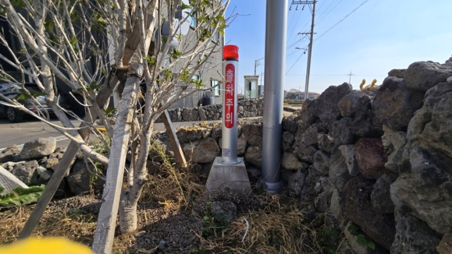
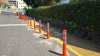
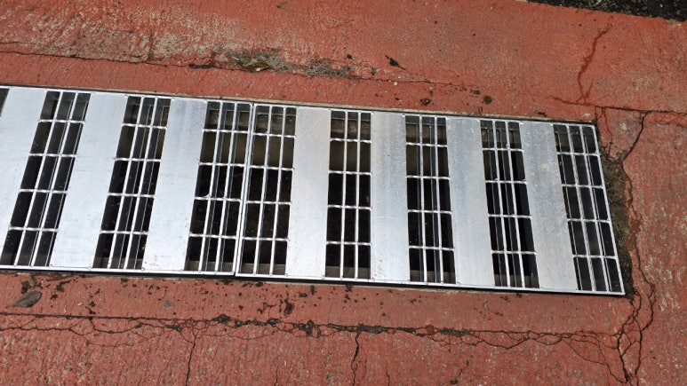

제주 공공·교육시설의
안전 문제를 현장에서 해결합니다.
관공서·공공기관·학교의 안전시설 설치·교체·보수부터 안전자재 납품까지
제주 전 지역 현장 대응 · 1개소부터 시공·납품 · 운영 (주)아인산업안전
주요 서비스
제주에서 실제로 수행한 작업을 기준으로 분야를 나눴습니다.
도로·교통 안전시설
차선규제봉, 시선유도봉, 출차주의등, 반사시설, 경계석. 차량과 보행자가 만나는 지점을 정리합니다.
- 차선규제봉
- 시선유도봉
- 출차주의등
- 볼라드
스테인리스·금속 시설물
스텐 자바라 대문, 맞춤 프레임, 소규모 금속 시설물. 해풍 환경을 전제로 재질을 고릅니다.
- 스텐 자바라 대문(레일형)
- 스텐 자바라 대문(앵글 프레임형)
- 앵글 레일·프레임
- 소규모 금속 시설물
학교·어린이 안전시설
통학로 시선유도봉, 출입구 경사로 진입판, 교내 안전시설. 방학 기간 시공에 맞춰 진행합니다.
- 통학로 시선유도봉
- 경사로 진입판
- 교내 안전표지
- 어린이보호구역 안전시설
보행·생활 안전시설
배수로 그레이팅, 트렌치 커버, 보행 안내·반사시설. 발이 빠지고 덜컹거리는 구간을 정리합니다.
- 배수로 그레이팅
- 중하중 그레이팅
- 트렌치 커버
- 보행 안내·반사시설
공공시설 유지보수
노후·부식·파손 시설의 보수와 부분 교체. 전면 교체 예산이 없을 때 판단을 함께 정리합니다.
- 노후 안전시설
- 부식 금속 시설물
- 파손 안전표지
- 경계석·포장 복구
실제 제주 시공사례
사진과 작업 내용을 그대로 정리했습니다. 비슷한 현장이면 견적을 가늠하실 수 있습니다.

서귀포시 로터리 차선규제봉 교체
로터리는 진입 차량과 진출 차량이 같은 지점에서 동시에 발생하는 구간입니다. 이곳의 기존 규제봉이 제 기능을 못 하면 중앙선 침범과 불법 유…
사례 자세히 보기 →
제주 진출입로 출차주의등 설치 (미러센서·경광등)
진출입로는 건물에서 나오는 차량과 보도를 지나는 보행자가 만나는 지점입니다. 차량이 나오는 것을 보행자가 미리 알 수 없으면, 서로를 발견하…
사례 자세히 보기 →
단지 내 도로 경계석 철거·재설치 및 아스콘 포장 복구
단지 내 도로의 선형이 좁아 차량이 경계석을 밟고 지나가는 일이 반복되고 있었습니다. 경계석이 계속 하중을 받으면 파손과 이탈로 이어지고, …
사례 자세히 보기 →
학교 출입구 경사로 진입판 설치
보도와 도로 사이에 단차가 있어 통행이 끊기는 구조였습니다. 아이들뿐 아니라 유모차와 휠체어가 지날 때 걸림이 생기고, 차량이 넘어갈 때는 …
사례 자세히 보기 →
서귀포시 초등학교 통학로 시선유도봉 설치
현장을 처음 확인했을 때 차량과 보행자의 동선이 자연스럽게 섞일 수 있는 구조였습니다. 어린이가 매일 이용하는 통학로였기 때문에, 사고가 난…
사례 자세히 보기 →
학교 배수로 중하중 그레이팅 교체
현장을 확인해 보니 바닥 콘크리트에 균열이 여러 곳 있었고, 배수로 주변이 파손·열화된 상태였습니다. 기존 그레이팅은 이 구간에 걸리는 하중…
사례 자세히 보기 →어떤 문제를 해결하나요?
지금 겪고 계신 상황을 고르시면 해당 안내로 바로 이동합니다.
진행 절차
현장 확인부터 유지관리까지. 자재 납품은 필요 자재 확인 → 규격·수량 협의 → 견적 → 납품 순으로 진행합니다.
- 현장 확인제주도 내 현장을 직접 보고 상태와 동선을 확인합니다.
- 시설·자재 선정규격과 재질을 현장 조건에 맞춰 고릅니다.
- 견적작업 범위를 나눠 견적을 드립니다. 부분 시공도 가능합니다.
- 설치 또는 교체기존 시설 철거가 필요하면 함께 진행합니다.
- 유지관리다음 점검 시점과 확인할 항목을 알려드립니다.
안전시설·안전자재가 필요하신가요?
수량과 규격이 정해진 납품은 견적으로, 소량 직접 구매는 쇼핑몰로 안내합니다.
운영회사
(주)아인산업안전
제주안전시설은 (주)아인산업안전이 운영하는 제주 안전시설 전문 브랜드입니다. 시설물 유지관리 공사업과 안전용품 업종을 등록해 두고 있어, 시공과 자재 납품을 한 곳에서 처리할 수 있습니다.
회사소개 자세히 보기 →